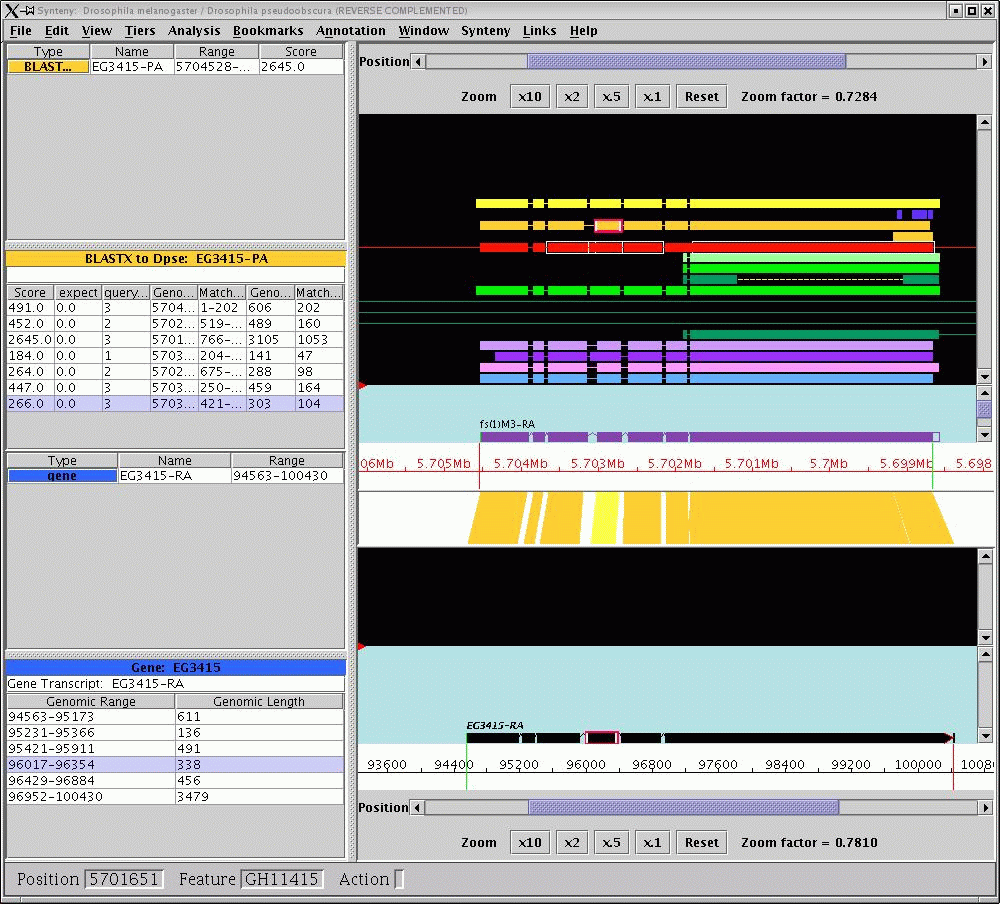

Using the Synteny Viewer with "Embedded link data"
Last updated 6/26/2006
By "embedded link" I mean that the synteny linking data is contained in
the curation data set itself. This is true of both GAME and Chado JDBC
data. In contrast, Ensembl and GFF load there linking data from a
separate source, be it a database or file. Below is described working
with GAME and after that Chado JDBC.
GAME
Here are the instructions for trying the GAME synteny viewer.
Please note that until the synteny data becomes public, you will
only be able to look at the example that is included with the
Apollo distribution. Also be aware that the synteny viewer is
still in active development, so there are still many bugs. You
should see better performance in the next release.
When you start apollo, choose the data adapter called "Synteny". If
you have the version of the apollo.cfg that came with the Apollo public
release 1.4.2, this should give you the GAME synteny choices of
Drosophila data, rather than the GFF synteny choices for Ensembl
data.
You can choose "Load two species" and then under file, ask to browse
to
find the example GAME files showing a syntenic region between
Drosophila
melanogaster (Dmel) and Drosophila pseudoobscura (Dpse).
Please note that this is only an example, and is not official
FlyBase
pseudoobscura data. For now, you will only be able to view this
one example; complete data will be released at a later date.
The Synteny data loader should show the following example files:
Species 1:
data/example.xml
then hit the "Species 2" tab and select
Species 2:
data/dpse-example.xml
The GAME synteny viewer will allow you to see comparative links between
the Dmel and Dpse sequence, in salmon pink for the syntenic block data
and in tan for the BLASTX data, comparing the r3.1 annotations to the
genewise predictions in Dpse which have been promoted to annotations.
It is often easier to see the tan BLASTX results if you hide the
Synteny
results, either with the third mouse menu or the types panel. You can
also hide links with the link popup menu(described below)
You can click on the section with the colorful polygons and with the
third
mouse button ask to see only +/+, ±, -/-, or -/+ strands. You
can
also use that menu to "home in on a selected link".
The menu also lists all the linked tiers, that can be selected for
visibility.
When you choose ±, you usually need to reverse complement the
species that
is displaying the - strand. So if you click in the - strand species,
then
under the "view" menu you can select "reverse complement". Clicking in
either the top species or bottom species window makes that window
active
for most menu options at the top. You can see which species window is
active under the "Synteny" menu.
Under the Synteny menu, you can lock scrolling or zooming. Using the
types panel, under the tiers menu, you can see various types of
comparative data.
Please note: the EnsJ/GFF
synteny viewer is currently out of commission.
Here is a screenshot of GAME data in the synteny viewer:

Advanced configuration
If you have GAME data from two species that you would like displayed in
synteny it's a bit involved. Here is what you need to know:
- GAME synteny works differently than ensembl. There is no compara
database to get links from (at least not yet), so the linking
information actually comes from the species data itself.
- There are settings in the tiers files and style file to indicate
which types link to other species, what they link to and how they link
to it.
- Presently GAME synteny only supports three types of links:
PEPTIDE,
TRANSCRIPT, and SELF. TRANSCRIPT links from a result to a transcript,
with the result having transcript coordinates. PEPTIDE links from a
result to a "peptide",
which is basically linking to a transcript with peptide
coordinates. SELF links from 2 features of the same type, and
presently links them only by location.
- A peptide link is configged like this:
[Type]
typename : BLASTX to Dmel
tiername : Comparative Dmel
resulttype : blastx:aa_dmel_RELEASE3-1.FASTA
resulttype : blastx:dmel_translation.FASTA
...
synteny_link_type : PEPTIDE
link_query_species : Drosophila pseudoobscura
link_hit_species : Drosophila melanogaster
- A transcript link would look the same except with:
synteny_link_type : TRANSCRIPT
- A self link would have:
synteny_link_type : SELF
- A peptide link in GAME xml looks like this:
< computational_analysis>
< program> blastx</program>
< database> aa_dmel_RELEASE3-1.FASTA</database>
< date timestamp="1070962040000">Tue Dec 09 04:27:20 EST
2003</date>
< result_set id=":1406526">
< name>
CG8931-PA-Contig1100_Contig5371-1-aa_dmel_RELEASE3-1.FASTA-blast</name>
< seq_relationship type="query"
seq="Contig1100_Contig5371:21575-23310">
< span>
< start> 1613</start>
< end> 436</end>
</span>
</seq_relationship>
< result_span>
< name> CG8931-PA</name>
< type> blastx:aa_dmel_RELEASE3-1.FASTA</type> ...
< seq_relationship type="query"
seq="Contig1100_Contig5371:21575-23310">
< span>
< start> 1613</start>
< end> 1245</end> </span>
< alignment>
PSFNLNIHLLDTSLRKYL...
</alignment>
</seq_relationship>
< seq_relationship type="subject" seq="CG8931-PA">
< span>
< start> 42</start>
< end> 164</end>
< /span>
< alignment>
PSKHLGSSLEEREKAIVD...
< /alignment>
< /seq_relationship>
< /result_span>
< /result_set>
- So how does this turn into a link? First this result_set gets
assigned a visual Type (FeatureProperty in java) from its program and
database. The resulttype in the tiers config above is
"program:database", which maps the logical/data type to the visual
type. Then if that visual type has a synteny_link_type (as well as the
link species), its seen as a linkable type. Since this is a PEPTIDE
type, all of the transcripts of the other species are gone through and
there peptide name is checked with the hits peptide name. The hits
peptide name is given in the "seq_relationship type=subject" line
above. The
"seq" parameter is the peptide name, which is CG8931-PA here. So upon
going through all of the transcripts of the other species, if one
existed that was called CG8931-RA, it would have the peptide name
CG8931-PA, and the 2 features would form a link. According to the
peptide coords given above (42-164) the subregion (which may or may not
be
the whole exon) of the exon that
holds those peptde coords would end up being the other part of the link.
Chado JDBC Data
The Chado JDBC data adapter can support embedded link data as well (as
of June 2006). Like GAME synteny it is configured in the tiers file.
Here is a Type from the tiers file configured for jdbc synteny from
conf/paramecium.tiers:
[Type]
tiername : Gene Prediction
typename : Gaze
resulttype : Gaze
.....
synteny_link_type: SELF
synteny_link_level: PARENT
synteny_link_match_on: ID
SELF says that it links to features of its same type (just as in Game).
synteny_link_level PARENT says to link features at the parent level not
at the child/leaf level. For instance for a gene prediction predicting
exons and transcripts, PARENT says to link the predicted transcripts,
not exons. CHILD (which I believe is the default) would cause the exons
to link. synteny_link_match_on: ID says that the linking actually
happens via IDs. The Jdbc reader actually reads in the ids of the 2
mathcing features and stores them with each feature in the apollo
datamodel. This contrasts from game where the id information is lost
and features find each other via RANGE.
The jdbc adapter will query chado for this kind of relationship looking
for a feature_relationship between the 2 features. I believe the type
of this relationship is one of the new syntenic that were recently
discussed on the gmod schema list.